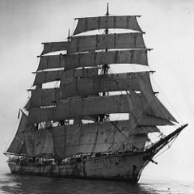

Парусник «Кэррол А. Диринг» был пятимачтовой шхуной, построенной в 1911 году, и служил транспортным судном. Владелец судна Г.Г. Диринг назвал корабль в честь своего сына. В свое последнее плавание «Кэррол А. Диринг» отправился из порта Рио-де-Жанейро к берегам Америки 2 декабря 1920 года. Команда корабля состояла из 12 человек. Так получилось, что постоянные капитан и старпом «Кэррол А. Диринга» – отец и сын  Мерриты — не смогли выйти в рейс, и их заменили капитан У. Б. Вормелл (опытный морской волк) и старший помощник Макленнан. Последним, кто видел судно с экипажем на борту был смотритель плавучего маяка на мысе Лаукат – Томас Джекобсон. По его словам, «Кэррол А. Диринг» проследовала мимо маяка 28 января 1921 года. Судно просигналило смотрителю о том, что у него сорвало все якоря. Кричавший в рупор с борта корабля человек просил оповестить Норфолк о том, чтобы для «Кэрол А. Диринг» приготовили буксир. Но Джекобсон не смог связаться с Норфолком по причине неисправности радиостанци.А 31 января 1920 года «Кэрол Диринг» был обнаружен пустым на мели у мыса Геттерас Северной Каролины. Помимо людей, отсутствовали все спасательные шлюпки, бортовой журнал, навигационное оборудование.